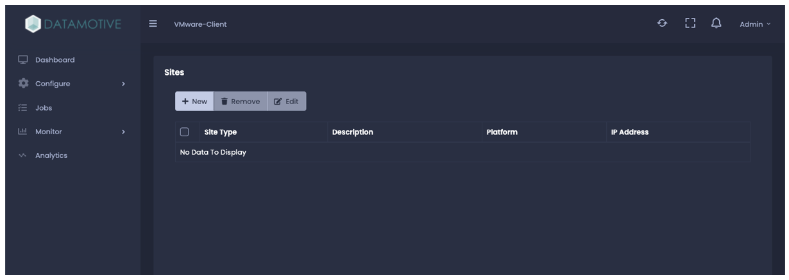
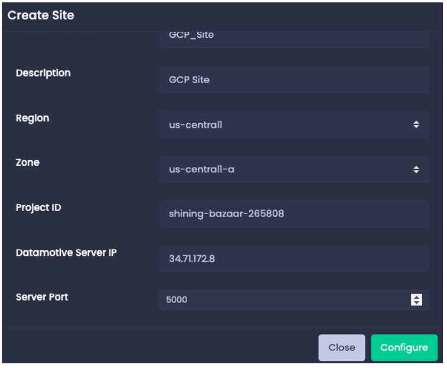

Create GCP Site
To create site click the “+ New” button and Create site windows will pop-up.
The common inputs are,
| Site Type | (Protect/Recover) - Select the site type based on source or destination. |
| Platform Type | Select the Platform type - VMware/AWS/GCP. |
| Platform Name | Provide name for this platform. |
| Description | Provide description for this Site platform. |
There are few additional inputs required based on the selection of Platform type.
| Region | GCP region where the workload will be replicated and recovered. |
| Zone | GCP zone where the workload will be replicated and recovered. |
| Project ID | GCP Project ID where the workload will be replicated and recovered. |
| Datamotive Server IP | IP of the Datamotive replication service running in the same AWS region and zone. |
| Server Port | Datamotive replication service port (default - 5000). |
Click on configure to create the site and on successful creation, site will be listed in the list view.